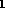

Functions


Next: Switches
Up: No Title
Previous: REDTEN FunctionsVariables,
This section gives the details of the calling sequence and return
values of each of the REDTEN user-callable functions. For a detailed
description of what each function does, see the relevant section of
the main manual.
The argument type will be one of
- id
- --- an identifier is expected.
- list
- --- the argument is a list, this implies the use of ' (see 1.2.3). Following the Standard Lisp Report (Marti
et.al. 1979) a list of homogeneous entities is denoted by xxx-list, where xxx is the class of items in the list. For
example, an id-list is a list of identifiers.
- string
- --- a string, enclosed in double-quotes is expected.
- bool
- --- either 't or 'nil.
- lit
- --- the argument is the literal value shown.
- any
- --- any kind of argument may be given.
- int
- --- the argument is an integer.
- plist
- --- the argument is a property list.
- alist
- --- the argument is an association list.
- aexp
- --- the argument is an algebraic expression.
- iexp
- --- the argument is an indexed expression.
- iobj[n]
- --- the argument is an indexed object (either the name
alone, or with an index), of rank n if specified.
- index
- --- the index of an indexed object, including the enclosing
square brackets.
Any argument name beginning with a ' indicates that the
lisp quote function should be applied (i.e. type ' before the
argument). This will most often apply to arguments of type list,
and on occasion to id's as well.
Argument types preceeded by a quote character (') indicate that
the argument must be quoted when calling the function, failing
to do so will likely result in an error. Quoting an argument that is
not supposed to be quoted will likewise generate an error.
- altmetric (name:iobj, metric:iobj):id=<name
altmetric()
- christoffel1 ({name:id}):id=<christoffel1<name
christoffel1()
- christoffel2({name:id}):id=<christoffel2<name
christoffel2()
- cleartmp ():t
cleartmp()
- cmod (val:aexp):aexp
cmod()
- cofactor (name:iobj, name:id, {transpose_flag:bool}):id=<name
cofactor()
- complex (val:aexp):aexp
complex()
- copyfam (metric:iobj, new_metric:id):id=<new_metric
copyfam()
- cnj (val:aexp):aexp
cnj()
- cov (name:iobj):id=<name_CD
cov()
- d (val:aexp):aexp
d()
- dalembert (val:aexp):aexp
dalembert()
- defindextype ('range :list, n :int,
{name :id},
{format :string},
{flg :bool}) :id=<name|user<n
defindextype()
- delta (name:id, type:int):id=<name
delta()
- describe (name:iobj,
{description:string}):id=<name
describe()
This function has a side effect.
- det (name:iobj[2],{val:aexp}):aexp=?<val
det()
- determ (name:iobj[2], cofname:id,{trans_flag:bool}):id=<cofname
determ()
- dir ():bool=t
dir()
- div (name:iobj,output:id):id=<output<name_D
div()
- einstein ({name:id}):id=<einstein<name
einstein()
- fn (func:function name, index:index):aexp
fn()
need to declare fname
- freinstein ({name:id}):id<freinstein<name
freinstein()
- frmetric ({name:id}):id<frmetric<name
frmetric()
- frricci ({name:id}):id<fricci<name
frricci()
- frriccisc ({name:id}):id<friccisc<name
frriccisc()
- frriemann ({name:id}):id<friemann<name
frriemann()
- frweyl ({name:id}):id<frweyl<name
frweyl()
- gamma ({name:id}):id<gamma<name
gamma()
- generics({name:id, }):bool=t
generics()
side effect: prints generic links of specified names, or all of them
- geodesic (name:id, {affine:kernel):id=<name
geodesic()
- getcon (n:int, m:int):id=name of connection
getcon()
- getmetric (n:int):id=name of metric of type n
getmetric()
- help ({name:id}):bool=t
help()
- ias (name:iobj, {flag:bool}):id=<name
ias()
- iclear(name:iobj{,name:iobj, ...}):bool
iclear()
- icopy (in:iobj, out:id):id=<out
icopy()
- im (val:aexp):aexp
im()
- indexed (name:iobj):bool
indexed()
- invert (name:iobj):id=<name_inv
invert()
- iprop (name:iobj):bool
iprop()
- killing (name:id,{conf:bool}):id=<name
killing()
- lie (name:iobj, vec:iobj[1]):id=<name_<vec
lie()
- mapfi (name:iobj):bool
mapfi()
- mclear ()
mclear()
- metric (line:aexp| name:iobj[2], {name:id}):id=<name<metricmetricseq
metric()
- mkcoords (name:id):id=<name
mkcoords()
- mkobj ('name:id| id-list,
'indextype :int-list, {'symmetries :list-list}(),
{'implicit :bool},
{'itype :id}) :iobj
mkobj()
- multiplier (name:iobj, {val:aexp}):id=?<val
multiplier()
- nocomplex (z:id, {z:id, ...}):bool
nocomplex()
- nodir (name:iobj, {name:iobj, ...}):bool
nodir()
- npmetric(con:ibobj[2]| l:iobj[1], n:iobj[1], m:iobj[1]):id=<metric_<metricseq
npmetric()
- npnames()
npnames()
- npspin({name:id})<name<npspin
npspin()
- npD(val:aexp):aexp
npD()
- npDEL(val:aexp):aexp
npDEL()
- npdel(val:aexp):aexp
npdel()
- npdelc(val:aexp):aexp
npdelc()
- npricci({name:id}):id<npricci<name
npricci()
- npweyl({name:id}):id<npweyl<name
npweyl()
- nulltetrad ({name:id}):id<nulltetrad<name
nulltetrad()
- odf(name:iobj, {order:int}):id=<name_DF<order
odf()
- pdf (val:aexp, index:index):indexed expression
pdf()
- protect (name:iobj, {k| w | kw:lit}):id=<name
protect()
- rat (val:aexp):aexp
rat()
- re (val:aexp):aexp
re()
- rem (name:pattern, {name:pattern}):bool
rem()
- remi (name:pattern, {name:pattern}):bool
remi()
- restoreobj():id=?
restoreobj()
- restrict(name:iobj, lb:int, ub:int):id=<name
restrict()
- ricci ({name:id}):id<ricci<name
ricci()
- riccisc ({name:id}):id<riccisc<name
riccisc()
- riemann ({name:id}):id<riemann<name
riemann()
- setcon (name:iobj[2]):id=<name
setcon()
- setmetric (name:iobj[2]):id=<name
setmetric()
- seval (val:indexed expression):aexp
seval()
- shift (name:iobj):id=<name
shift()
- spchristoffel ({name:id}):id<spchristoffel<name
spchristoffel()
- spinmat ({name:id}):id<spinmat<name
spinmat()
- spmetric ({name:id}):id<spmetric<name
spmetric()
- symz(exp:iexp):iexp
symz()
- tenmetric():id=?
tenmetric()
- trace (name:iobj[2]):aexp
trace()
- weyl ({name:id}):id<weyl<name
weyl()
Additional Functions
- addtoenv (name:id, {name:id,...}):bool=t
addtoenv()
- delenv(name:id)
delenv()
- etime()
etime()
- newenv ({name:id}):id=previous environment
newenv()
- restorenv(name:id):id
restorenv()
- savec (file:string, name:id, {name:id}):bool
savec()
- savei (file:string, name:id, {name:id}):bool
savei()
- savenv(name:id):id= ?
savenv()
- stime()
stime()
- swapenv(name:id):bool
swapenv()
Lisp Functions
- put(name:id, key:id, value:any):any
put()
- get(name:idm key:id):any
get()
- flag(names:id-list, flag:id):nil
flag()
- flagp(name:id, flag:id):bool
flagp()
- prop(name:id):plist
prop()
- remprop(name:id, key:id):any
remprop()
- setprop(name:id, val:plist):plist
setprop()
Next: Switches
Up: No Title
Previous: REDTEN FunctionsVariables,
John Harper
Wed Nov 16 13:34:23 EST 1994